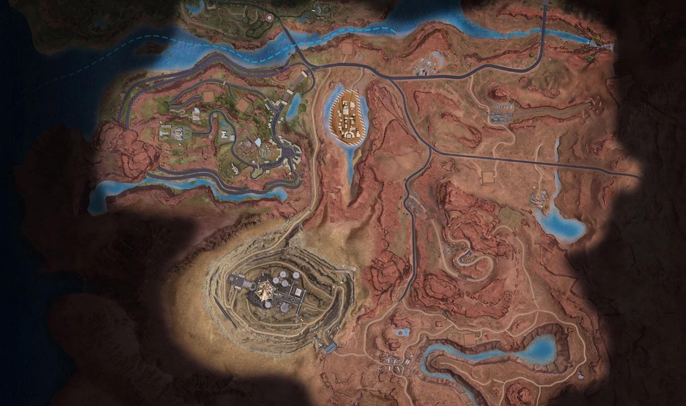

Menyelami Koller Mines di Garena Undawn: Panduan Lengkap Eksplorasi, Lokasi Peta Harta Karun, dan Strategi Bertahan Hidup

Garena Undawn hadir sebagai game survival open-world yang menyuguhkan pengalaman eksplorasi intens dengan berbagai tantangan menarik. Salah satu area yang jadi sorotan adalah Koller Mines, wilayah bekas tambang penuh sejarah, sumber daya, dan bahaya. Artikel ini akan membahas secara lengkap tentang peta Koller Mines, mulai dari latar belakang, lokasi harta karun, hingga strategi bertahan hidup di tengah reruntuhan dan makhluk mutan yang mengintai.
Apa Itu Koller Mines?
Koller Mines merupakan wilayah tambang tua yang dahulu pernah mengalami masa kejayaan saat demam emas di abad ke-19. Kini, tempat ini telah berubah menjadi daerah sunyi yang hanya dihuni oleh para survivor yang memanfaatkan sisa-sisa tambang sebagai tempat berlindung dan mencari sumber daya.
Dengan struktur medan yang kompleks, dari reruntuhan industri hingga ruang bawah tanah misterius, Koller Mines menjadi pilihan utama bagi pemain yang gemar menjelajahi lokasi tersembunyi, berburu harta karun, dan menantang zombie maupun mutan berbahaya.
Lokasi Utama di Koller Mines
Berikut beberapa titik penting yang wajib kamu ketahui saat menjelajah Koller Mines:
- Goldrush Village: Pusat aktivitas survivor, lengkap dengan bar, outpost, dan NPC penting.
- Highway 69 Roadhouse: Bekas pom bensin dan penginapan strategis untuk loot dan peta harta karun.
- Antelope Valley: Wilayah terbuka dengan jembatan rusak dan petunjuk visual seperti tanda panah besar.
- Drake’s Lab: Area laboratorium di timur laut, penuh machinery dan titik menggali berukuran besar.
- Hoof Bay & Senega Station: Lokasi penting untuk menemukan perlengkapan dan dig spot tersembunyi.
- Monument Vale & Pioneers Camp: Dipenuhi reruntuhan kendaraan, perkemahan, dan loot tersembunyi.
Lokasi Peta Harta Karun dan Dig Spot Terperinci
Dalam Koller Mines terdapat 10 peta harta karun utama, masing-masing dengan titik menggali yang berbeda dan unik. Kamu bisa mendapatkannya melalui barter makanan dengan NPC atau interaksi dengan objek di sekitar area.
| No | Nama Peta Harta Karun | Cara Mendapatkan | Lokasi Menggali |
|---|---|---|---|
| 1 | Resting Under the Broken Bridge | Tukar Barbeque dengan NPC Arrogant di Antelope Valley | Di bawah jembatan rusak timur laut Antelope Valley |
| 2 | Arrow Guide | Tukar Fruity Pumpkin Soup dengan NPC Depressed di Monument Vale | Bawah tanda panah kuning besar di Antelope Valley |
| 3 | My Turf | Tukar 5 Braised Pumpkin and Pork dengan NPC Firm di Frank’s Orchard | Bukit barat Highway 69 Roadhouse |
| 4 | Failed Drift | Cari safe di motel timur Goldrush Village | Di tumpukan batu barat daya Hoof Bay |
| 5 | Mining Machinery | Safe di bawah meja di Highway 69 Roadhouse | Sekitar machinery besar di Drake’s Lab |
| 6 | Hairpin Racing | Surat kabar di Survivor Bar, timur Goldrush Village | Di bawah kaktus Hoof Bay Highway |
| 7 | Abandoned Doorway | Korban tewas di halte bus menuju Senega Station | Di depan pintu Quarry yang ditinggalkan |
| 8 | Mine Train | Mobil dan mayat dekat Monument Vale | Di dekat kereta berhenti di Senega Station |
| 9 | Stone Arch on the Water | Mayat dan van terbengkalai utara Hoof Bay | Rumah dekat danau, ada batu lengkung dan bendera |
| 10 | Tree in the Village | Backpack di truk dekat Signal Tower | Di dekat pohon unik di Pioneers Camp |
Strategi Eksplorasi dan Bertahan Hidup
Menjelajahi Koller Mines bukan hal yang bisa kamu lakukan sembarangan. Dibutuhkan persiapan matang dan strategi yang tepat:
- Persiapkan perlengkapan bertahan hidup: Bawa makanan, obat-obatan, dan amunisi secukupnya untuk eksplorasi panjang.
- Manfaatkan interaksi dengan NPC: Banyak dari mereka memberikan peta dan item penting lewat sistem barter.
- Gunakan kendaraan dan glider: Mempercepat mobilitas dan mempermudah menjangkau spot tersembunyi atau area tinggi.
- Waspadai musuh di titik dig: Zombie dan mutan sering muncul di sekitar lokasi penggalian. Lebih baik bermain bersama tim co-op untuk keamanan.
- Eksplorasi lokasi tersembunyi: Terowongan, gua, dan reruntuhan sering menyimpan loot penting dan jalan pintas yang tidak terduga.
Keunikan Koller Mines
Ada alasan mengapa Koller Mines jadi salah satu map favorit di Garena Undawn. Beberapa daya tarik utamanya antara lain:
- Nuansa sejarah tambang tua: Lingkungan penuh artefak dan narasi mendalam dari masa kejayaan industri tambang.
- Variasi medan: Dari lembah terbuka hingga laboratorium tua, medan di map ini menantang kreativitas strategi kamu.
- Kolaborasi tim: Banyak misi dan lokasi peta yang ideal dimainkan dalam mode co-op, meningkatkan keseruan dan efisiensi eksplorasi.
Sumber Daya Penting di Koller Mines
Koller Mines bukan hanya tempat untuk bertarung, tapi juga ladang sumber daya penting bagi perkembangan karakter kamu. Berikut beberapa item krusial yang bisa ditemukan:
- Mineral dan logam: Seperti batu bara dan besi tua untuk crafting dan upgrade equipment.
- Perlengkapan survival: Termasuk senjata jarak dekat, senapan, armor, dan suku cadang kendaraan.
- Item medis: Obat-obatan dan kit pertolongan pertama tersedia di beberapa area yang harus dieksplorasi.
- Komponen elektronik: Terutama di Drake’s Lab, penting untuk teknologi dan pengembangan peralatan oleh karakter Roman.
Koller Mines merupakan medan tempur dan eksplorasi yang tidak hanya menantang secara mekanik, tapi juga kaya secara naratif. Dengan berbagai lokasi peta harta karun, lingkungan berbahaya, dan peluang loot yang melimpah, map ini wajib dijelajahi oleh semua survivor serius di Garena Undawn.
Pahami setiap sudut wilayah, manfaatkan interaksi dengan NPC, dan siapkan strategi matang baik secara individu maupun tim. Semua itu adalah kunci bertahan dan menjadi pemain unggul di wilayah bekas tambang yang penuh misteri ini.
Dan jika kamu ingin memperkuat karaktermu lebih cepat, jangan lupa untuk melakukan Top Up Garena Undawn hanya di Topupgim. Proses cepat, aman, dan terpercaya untuk mendukung perjalanan survival kamu makin maksimal!